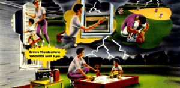

American Red Cross
American Red Cross Federal Emergency Management Agency
Federal Emergency Management Agency
Are You Ready for a Thunderstorm? American Red Cross Federal Emergency Management Agency National Oceanic and Atmospheric Administration
National Oceanic and Atmospheric Administration
Reprinted by Permission of the American Red Cross (1997)
Keep an eye on the sky. Look for darkening skies, flushes of light, or increasing wind. Listen for the sound of thunder.
A thunderstorm is always accompanied by lightning. Thunderstorms are intense local storms averaging 20 miles across and reaching as high as 10 miles. Thunderstorms occur in all 50 states and all U.S. territories.
Be prepared by having various family members do the activities on the checklist below. Then get together to discuss and finalize your Family Disaster Plan.
Pick a safe place in your home where family members can gather during a thunderstorm. This should be a place where there are no windows, skylights, or glass doors.
Location of safe place:____________________________
Discuss how you would know if a tornado is part of a thunderstorm. Does your community have a warning system? What other ways would you be notified of a tornado watch or warning?
How we would be warned:___________________________
Pick a safe place to be in your home in case of a tornado.
The safe place you picked for a thunderstorm may not be the safest place to be during a tornado. If you hear a loud roar or hear a tornado warning, you need to go to the lowest floor of your home into a room where there are no windows or glass doors. (If you have a basement, make that your safe place to be for a tornado.)
Location of safe place to be in case of a tornado:__________________
Show children how to practice squatting low to the ground to be the smallest target possible for lightning in case they get caught outside in a thunderstorm. Show them how to place their hands on their knees with their head between their knees.
Practice drill conducted:_____________________ (date)
Assemble a Disaster Supplies Kit in a clearly labeled, easy-to-grab container.
Location of Disaster Supplies Kit:______________________
Take an American Red Cross first aid course to learn how to treat burns and how to give rescue breathing and administer CPR.
Household member(s) trained in first aid:____________________
Certifications good through:_____________________ (date)
And remember...when a thunderstorm, tornado, earthquake, flood, fire, or other emergency happens in your community, you can count on your local American Red Cross chapter to he there to help you and your family. That's been our role for more than 100 years.
NOAA PA 93051
ARC5009
April 1993